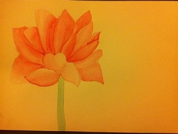
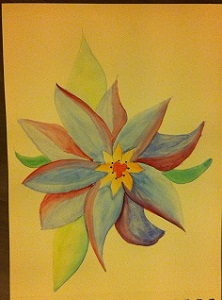
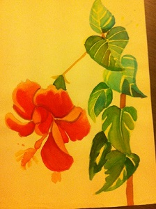
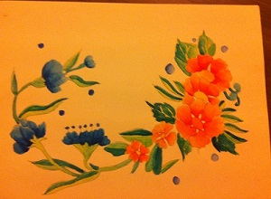
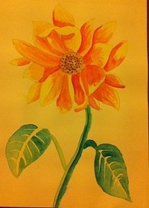
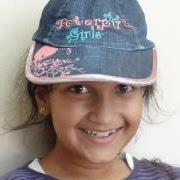

I am 13 years old. I study in 8th grade and I live in Rajkot, India. My favorite colour is Blue. find out more about me at Aaryaa Portfolio.
I like to paint and play sports. In sports, I especially like to play Football and Basketball.
I love to sleep. I pass my time by watching movies or listening to songs. I like to write poems and stories. I hate studying.
1. I really wish to go on a deserted island all alone and spend my life there. I love adventures. All I would need with me is: a drawing book (for doodling), my cell phone and laptop (fully charged), a novel and a guide to completely crazy adventures.
2. If the deserted island thing doesn't work out, I'll want to go to London. I simply love London. The reason being, I can go crazy, without anyone judging me!
I LOVE to read! I have read many books, and I recommend a few for teenagers like me, who love to read:
1. The Fountainhead
2. The Fault In Our Stars
3. The Percy Jackson series
4. The Heroes of Olympus series
5. The Divergent Triology
6. The Hunger Games
7. Anne Frank's Diary
8. The Cherub series
1. The Duff
2. Boyhood
3. Kingsman: The secret service
4. Pitch Perfect One and Pitch Perfect Two
5. The Perks of being a Wallflower
6. The Maze runner
7. The imitation game
8. The Theory of Everything
9. Birdman
1.Arrow
2.The Flash
3.Teen Wolf
4.Gotham
5.Orange is the new Black
6.Sherlock
I like to paint and draw. That is my usual pass time activity...
 This was my first painting with water colors.
 The weekend painting, done in between homework breaks...
 Morning sketching time...


